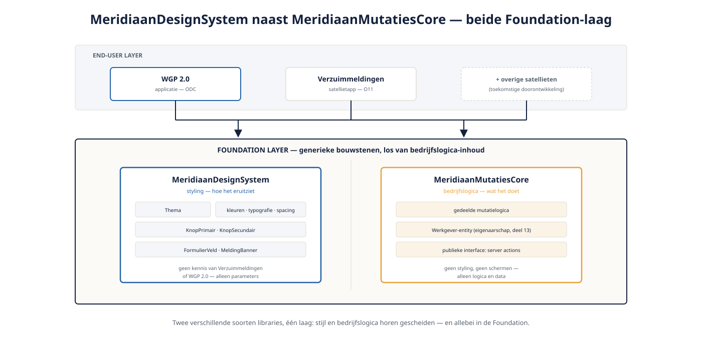

Deel 15 — UI op schaal: design system, thema's, herbruikbare blocks
Slidedeck · Ductus-cursus OutSystems · Niveau 2 — Professional · deel 15 van 30 · 16 slides
Slide 1 — Title: OutSystems: Vakbekwaam
OutSystems: Vakbekwaam
Deel 15 — UI op schaal: design system, thema's, herbruikbare blocks
Twee dagdelen
Slide 2 — Section: Dagdeel A — Design system en thema's
Dagdeel A — Design system en thema's
Slide 3 — Statement: Eén block volstond in niveau 1.
Eén block volstond in niveau 1.
Vijftien modules hebben een systeem nodig.
Slide 4 — Bullets: Design system
Design system
- Thema: kleuren, typografie, spacing
- Generieke blocks: knoppen, kaarten, formuliervelden
- Eigen Foundation-laag-module, los van bedrijfslogica

Slide 5 — Opdracht: Opdracht 15.1 — Design system of Core?
Opdracht 15.1 — Design system of Core?
Drie bouwstenen.
→ Werkboek 15.1
Slide 6 — Opdracht: Baan A / Baan B
Baan A / Baan B
A — Design system + thema in Service Studio
B — Zelfde opbouw in ODC Studio
→ Werkboek, eigen baan
Slide 7 — Section: Dagdeel B — Herbruikbare blocks op schaal
Dagdeel B — Herbruikbare blocks op schaal
Slide 8 — Statement: Een block in het design system
Een block in het design system
kent jouw bedrijf niet.
Slide 9 — Bullets: De discipline
De discipline
- KnopPrimair, KnopSecundair, FormulierVeld, MeldingBanner
- Parameters: tekst, status, actie
- Geen kennis van Verzuimmeldingen of WGP 2.0
Slide 10 — Opdracht: Opdracht 15.2 — Bevat dit block bedrijfslogica?
Opdracht 15.2 — Bevat dit block bedrijfslogica?
Twee blockontwerpen beoordelen.
→ Werkboek 15.2
Slide 11 — Opdracht: Baan A / Baan B
Baan A / Baan B
A — Blockbibliotheek bouwen + toepassen in Service Studio
B — Zelfde opbouw in ODC Studio
→ Werkboek, eigen baan
Slide 12 — Section: Versiebeheer van het design system
Versiebeheer van het design system
Slide 13 — Bullets: Direct doorvoeren of gecontroleerd uitrollen?
Direct doorvoeren of gecontroleerd uitrollen?
- Eén wijziging raakt potentieel alle modules
- Vooral bij oud+nieuw gemengd landschap: gecontroleerd is veiliger
- Terugkerend thema in deel 19 (lifecycle/DevOps)
Slide 14 — Opdracht: Reflectieopdracht 15.3
Reflectieopdracht 15.3
Waarom gecontroleerde uitrol bij Meridiaan?
→ Werkboek 15.3
Slide 15 — Bullets: Kernpunten deel 15
Kernpunten deel 15
- Design system = styling, Core = bedrijfslogica — beide Foundation-laag
- Blocks in het design system: nooit bedrijfsspecifieke kennis
- Eén centrale stijlwijziging vervangt losse aanpassingen overal
- Gedeelde stijlwijzigingen: zelfde coördinatie-afweging als gedeeld datamodel
Slide 16 — Section: Volgende deel: Integratie op schaal
Volgende deel: Integratie op schaal